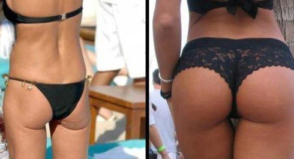

Памятка
Последний день тренировочной недели, как и всегда, мы посвящаем развитию гибкости и растяжке. Кому-то это кажется скучным или ненужным, но только тот, кто давно не растягивался и потерял гибкость, сможет по-настоящему оценить важность этого занятия. КРУГИ СЕГОДНЯ НЕ ДЕЛАЕМ!!!
Бытует мнение, что если вы хотите выработать у себя какую-либо привычку, то нужно повторять её в течение 21 дня, и тогда она закрепится в вашем сознании. Будем считать, что это так, а это значит, что фитнес, тренировки и правильное питание медленно, но уверенно становятся частью вашей повседневной жизни! Ну а сегодняшний инфо-пост мы хотим посвятить правильному отношению к здоровому образу жизни и питанию, и тем самым подвести черту под всеми темами этой недели.

Очень многие воспринимают диету как некое тяжкое бремя, связанное с ограничениями в количестве и вкусе съедаемой пищи, но бремя это необходимое, если хочешь быть стройным и красивым. Однако стоит вспомнить, что на самом деле слово диета имеет греческие корни, а его исходное значение близко к тому, что сейчас принято называть образом жизни. И это очень важный момент. Вот почему:
Ваше тело - материальная проекция вашего образа жизни. И выглядит оно соответственно тому, какой образ жизни вы ведете. Ни больше и ни меньше.
Проблема заключается в том, что люди, по крайней мере большинство, не видят этой взаимосвязи. Они не понимают, что именно те небольшие действия, которые они выполняют регулярно и те маленькие решения, которые они принимают каждый день, определяют то, какой результат они получают в итоге. Каждый раз, когда они решали поспать подольше, вместо того чтобы сделать с утра зарядку, или выбирали поездку на лифте, вместо того чтобы пройтись пешком, или выпивали бутылочку сладкой газировки за обедом, вместо обычной воды, каждый раз они делали шаг в сторону противоположную тому результату, который они хотели бы получить. Небольшой шаг, но в противоположную сторону.
Все эти мелочи по отдельности незаметны и привычны, поэтому никто не обращает на них внимание, но именно подобные мелочи и формируют наш образ жизни. Поэтому в следующий раз, вместо того чтобы выражать свое недовольство по поводу отражения в зеркале, стоит вспомнить о том, что это всего лишь отражение. И сместить свое недовольство со следствия на причину, направив его в сторону образа жизни. Ведь в отличие от процессов расщепления и накопления жира, поход на уличную спортивную площадку или пересмотр своего рациона вполне подвластные нам процессы.
В том чтобы избавиться от лишнего веса или, наоборот, набрать мышечную массу нет никаких секретов или тайных приемов, нужно просто понимать те физиологические процессы, которые за этим стоят. И самое замечательное, что эти процессы можно описать одной простой формулой, которую мы уже детально разбирали ранее в инфо-посте про баланс калорий. Простое сочетание тренировок и питания действительно позволяет добиваться отличных результатов.
Но это ещё половина беды. Настоящие проблемы начинаются тогда, когда твой текущий внешний вид перестает тебя устраивать, в то время как менять сложившийся образ жизни совсем не хочется. И вот тут начинают проявляться все чудеса изобретательности, на которые только способен мозг в попытке впихнуть невпихуемое (новое тело в старый образ жизни), то есть устранить возникший диссонанс: тренироваться мне некогда или не хочется, но зато не буду есть мучное, а дома буду обруч вертеть. Или: я буду есть много, но только овощи. Или: я вместо ужина выпью стакан воды. И с утра - тоже. На весах цифра меньше всегда в радость. Это не менее глупо, чем, сидя на голодной диете, повесить на холодильник фотографию фитнес-модели. Потому что обманывать себя можно лишь какое-то время, а потом образ жизни возьмет свое, и в тарелки вернется отнюдь не диетическая еда, а на столик рядом с привычным диваном вернется мучное.
Если ты не хочешь или не готов менять свой образ жизни, то стоит отложить идею о кубиках на животе или подтянутой попе до того, как у тебя начнут выпадать волосы от нервного истощения на почве колебания стрелки весов.

Хотим заметить, что вне зависимости от веса тело спортивного и неспортивного человека будут выглядеть совершенно по-разному. При этом очень сложно представить себе красивое тело без адекватно развитых мышц (это касается обоих полов). А развиваются мышцы исключительно благодаря нагрузке, о чем мы ещё поговорим в ПРОДВИНУТОМ блоке. Длина ног не зависит от того, бегаешь ты ими или нет. Но толщина зада - напрямую. К сожалению, об этом очень часто забывают молодые девушки, истязая себя различными диетами и совершенно не уделяя внимания тренировкам. Наверняка и ты видел таких, которые вроде бы уже совсем худые, а попа все равно дряблая, и каждая складочка жира проступает и обвисает, стоит нагнуться или сесть. Это всё происходит именно от отсутствия тренировок.
Напоследок. Когда увидишь кого-нибудь, чья внешность заставит тебя завидовать и сожалеть о своих достижениях, то сразу же подумай о том, что стоит за этой внешностью. Сколько лет регулярных тренировок, ведения активного образа жизни, внимательного отношения к своему питанию (и даже ежедневное приготовление еды вместо покупки полуфабрикатов и обедов в общепитах) и режиму дня стоит за таким результатом. И сможешь ли ты так же вложиться в себя, чтобы со временем получить подобный результат? Мы ещё поговорим об этом далее в программе.
Ладно, с этим вроде бы разобрались. Теперь предлагаем вернуться к нашей образовательной программе SOTKA и ещё раз немного рассказать о том, как она устроена. Вы уже знаете, что она разделена структурно на 3 составляющих: БАЗОВЫЙ блок (с 1 по 49 день), ПРОДВИНУТЫЙ блок (с 50 по 91 день) и ТУРБО блок (с 92 по 98 день).
Сейчас мы находимся в самом начале пути, в БАЗОВОМ блоке. Первые две недели этого блока были полностью посвящены разбору тренировочной составляющей программы (базовым упражнениям и ответам на самые частые вопросы), третья неделя была посвящена не менее важному моменту — организации правильного питания. Потому что, если не следить за своим питанием, то никакие тренировки не смогут привести тебя в форму!
На этом обязательная составляющая БАЗОВОГО блока закончится, и далее, начиная с 22 дня и по 50, каждый день мы будем публиковать инфопосты общего характера, содержащие ответы на самые часто задаваемые новичками вопросы (буквально вообще на все, какие возникают).
Ещё раз мы вернёмся к вопросам ТРЕНИРОВОК и ПИТАНИЯ уже в ПРОДВИНУТОМ блоке, когда будем разбирать упражнения более детально с точки зрения их нагрузки на конкретные мышцы (ведь мы все хотим быть не только сильными и здоровыми, но и красивыми). В этом же блоке мы внесём изменения в тренировочную схему, добавим дух уличного фитнеса, ну а ежедневные инфо-посты общего характера станут более сложными.
И, наконец, последний, ТУРБО блок, станет проверкой твоих сил, потому что в течение последней недели тренировок ты будешь получать каждый день новое интересное задание!
Вот такие у нас планы на ближайшее будущее, так что оставайтесь с нами, будет интересно!
Хотим заметить, что вне зависимости от веса тело спортивного и неспортивного человека будут выглядеть совершенно по-разному. При этом очень сложно представить себе красивое тело без адекватно развитых мышц (это касается обоих полов). А развиваются мышцы исключительно благодаря нагрузке, о чем мы ещё поговорим в ПРОДВИНУТОМ блоке. Длина ног не зависит от того, бегаешь ты ими или нет. Но толщина зада - напрямую. К сожалению, об этом очень часто забывают молодые девушки, истязая себя различными диетами и совершенно не уделяя внимания тренировкам. Наверняка и ты видел таких, которые вроде бы уже совсем худые, а попа все равно дряблая, и каждая складочка жира проступает и обвисает, стоит нагнуться или сесть. Это всё происходит именно от отсутствия тренировок.
Напоследок. Когда увидишь кого-нибудь, чья внешность заставит тебя завидовать и сожалеть о своих достижениях, то сразу же подумай о том, что стоит за этой внешностью. Сколько лет регулярных тренировок, ведения активного образа жизни, внимательного отношения к своему питанию (и даже ежедневное приготовление еды вместо покупки полуфабрикатов и обедов в общепитах) и режиму дня стоит за таким результатом. И сможешь ли ты так же вложиться в себя, чтобы со временем получить подобный результат? Мы ещё поговорим об этом далее в программе.
Ладно, с этим вроде бы разобрались. Теперь предлагаем вернуться к нашей образовательной программе SOTKA и ещё раз немного рассказать о том, как она устроена. Вы уже знаете, что она разделена структурно на 3 составляющих: БАЗОВЫЙ блок (с 1 по 49 день), ПРОДВИНУТЫЙ блок (с 50 по 91 день) и ТУРБО блок (с 92 по 98 день).
Сейчас мы находимся в самом начале пути, в БАЗОВОМ блоке. Первые две недели этого блока были полностью посвящены разбору тренировочной составляющей программы (базовым упражнениям и ответам на самые частые вопросы), третья неделя была посвящена не менее важному моменту — организации правильного питания. Потому что, если не следить за своим питанием, то никакие тренировки не смогут привести тебя в форму!
На этом обязательная составляющая БАЗОВОГО блока закончится, и далее, начиная с 22 дня и по 50, каждый день мы будем публиковать инфопосты общего характера, содержащие ответы на самые часто задаваемые новичками вопросы (буквально вообще на все, какие возникают).
Ещё раз мы вернёмся к вопросам ТРЕНИРОВОК и ПИТАНИЯ уже в ПРОДВИНУТОМ блоке, когда будем разбирать упражнения более детально с точки зрения их нагрузки на конкретные мышцы (ведь мы все хотим быть не только сильными и здоровыми, но и красивыми). В этом же блоке мы внесём изменения в тренировочную схему, добавим дух уличного фитнеса, ну а ежедневные инфо-посты общего характера станут более сложными.
И, наконец, последний, ТУРБО блок, станет проверкой твоих сил, потому что в течение последней недели тренировок ты будешь получать каждый день новое интересное задание!
Вот такие у нас планы на ближайшее будущее, так что оставайтесь с нами, будет интересно!